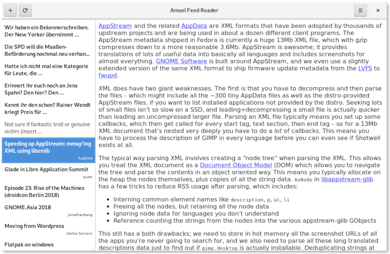

amsel - the next attempt
Most of the time i try to sharpen my skills regarding software development. There is so much to learn and i really want to get considered good enough in this field. Therefore i often try to experiment with new insights and advices from books or talks to try kind of development and learn from these experiments.
For example last year i experimented with my knowledge reading up the source code of gnome-builder and contributing small patches to build my own application in C. I saw, there are ideas around to have a GNOME RSS reader and i rebuilt therefore GNOME News. This was a nice experiment and i got nice comments about it. I ended up in some problems with my choice of architecture. It seemed like i made some mistakes here and there and the usage of libgrss had problems too (it seemed not maintained anymore and i had no idea how that library worked internally).
Coming out of this development i had the feeling, that i have to structure such an application more and should start with requirements first before i start developing. In the meantime i made attempts to have a GtkFlowBox with headers which ended up in a way which could work but is probably inperformant. Talking with some people at GUADEC made me feel like there are ideas about such a widget and people really want performance for List/FlowBox inside Gtk. There will be eventually a hackfest working on this (but there is no date at the moment).
One of my problems at my first and second attempt was that i really want to mix up a traditional offline RSS/Atom reader with an online service like feedly. But the former speaks only xml and the latter JSON. All my implementations where based on the input data and then i saw a talk from uncle Bob. He talked about an abstraced way for your application. Just implement the business logic and get the data in a simple format. This idea is similar to the unix philosophy which basically states:
- Write programs that do one thing and do it well
- Write programs to work together
- Write programs to handle text streams, because that is a universal interface.
The last point is the same like that from uncle Bob. This was a really nice idea which i wanted to test out. I took most of my code from former experiments and created a library called alb (AmseLBackend) which is the core driver for my application. It wraps data in a simple AmselRequest object which is raw data. It tries to determine the kind of data (which could be RSS, ATOM or JSON) and enters this data to a engine which returns usable data objects. The gui code is rather simple because of that (at the moment i only have 3 files) and i think this a good architecture to work forward. As i don’t want to write all this without a little showcase, this is my pre-alpha Amsel application.
Constructor attribute for shared libraries
I often read source code of different projects. Especially when i use them often like glib. I realized that glib has a glib-init file and wondered because i never had to call any initialization. Therefore this must be called by another mechanism.
glib-init.c includes a header called gconstructor.h which i know already from another project: gnome-builder. The header got probably copied but both projects use this for the same purpose:
execute a function to initialize a library on library-loading.
This is a really nice feature, which is not documented in the c standard. It is an extension from C compilers. If we read up the documentation we get:
__attribute__((constructor))
The constructor attribute causes the function to be called automatically before execution enters main ().
The aforementioned header tries to comply to various compilers or at least sets a preprocessor value to inform the user about missing functionality for this constructor attribute. As mentioned in the header file:
#ifdef G_DEFINE_CONSTRUCTOR_NEEDS_PRAGMA
#pragma G_DEFINE_CONSTRUCTOR_PRAGMA_ARGS(my_constructor)
#endif
G_DEFINE_CONSTRUCTOR(my_constructor)
static void my_constructor(void) {
...
}
Example
To demonstrate this, i created a simple example application with a shared library. The library looks like:
#include "gconstructor.h"
G_DEFINE_CONSTRUCTOR (this_runs_before_main)
void
this_runs_before_main (void)
{
printf ("%s\n", "Before main");
}
void
library_func (void)
{
printf ("%s\n", "Library Func");
}
I annotated one function with a constructor attribute. The library_func is exposed via the corresponding headerfile. The executable looks like:
#include "library.h"
int
main (int argc,
char *argv[])
{
printf ("%s\n", "Main");
library_func ();
return 0;
}
Not very surprising the output looks like
Before main
Main
Library Func
meson test is parallel
Today i searched half of the day for a super strange bug in my library development project. I wanted to build this library as a TDD library to get the hang of working from the API caller side first. Therefore i always build my tests before i write the working code.
My library has business layer with interfaces to all sides so i basically don’t care which implementation i use and i can act dynamically when i want a different backend for example. My implementation for the database layer is a sqlite one and this specific module was failing all the day. The interesting part is: it was just failing in a specific test order of my library tests. I was super confused because i got a database is locked error when i created my table scheme in one of my tests. The same call from former tests succeeded so there has to be a problem with opening and closing of my database. I checked every call to sqlite_open and sqlite_close and checked the return code of these calls but it looked like everything is fine.
Sqlite allows multiple reader in different connections but only one writer. The statement which failed in my test suite was a
CREATE TABLE IS NOT EXISTS (...)
I think this gets always interpreted as a write even if the database already has that table. What me really bothered was the ordering removed this error and i thought i have a really terrible closing error in my library. But then i realized that maybe it has nothing todo with my library. I knowed that i can configure meson to use more processes for testing. I consulted the meson reference and saw this statement about unit tests:
To reduce test times, Meson will by default run multiple unit tests in parallel.
This was the culprint. Tests which use my database even when i don’t test specifically my database are run in parallel which means multiple writer. A reordering can help - but would be a fragile solution. Disabling parallelism for some unit tests was the solution after all. So keep that in mind, when you try TDD - know your buildsystem, tap runner and environment!